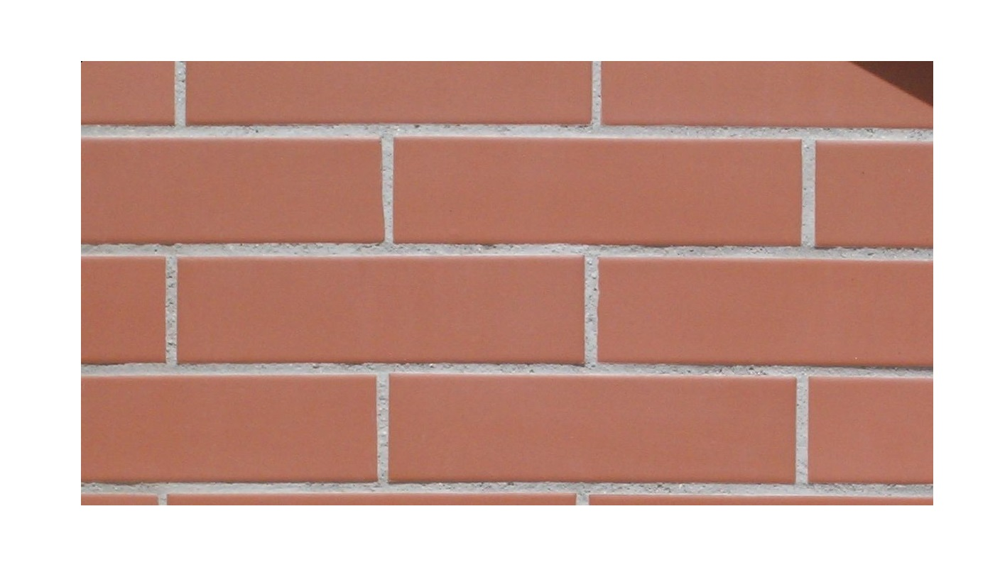

TABLA DE TIPOS DE LADRILLOS
Imagen
Nombre
Descripción


El ladrillo es uno de los materiales tipo cerámica o arcilla cocida más antiguo que se viene utilizando en el sector de la albañilería. Se distingue por su forma de prisma rectangular, y por sus propiedades que le hacen tener una excelente resistencia a la compresión. También se distingue por sus cualidades de aislamiento acústico y térmico. Con este material hecho de masa de barro cocida se logra levantar perfectamente cualquier muro o estructura. Este material es muy versátil, estable y duradero, siendo fabricado con cerámica roja mezclada con otros elementos. Generalmente suelen tener un espesor que oscila entre los 4 y los 27 cm.
Praesent nec ipsum tempor, imperdiet metus non, facilisis lectus. Etiam sed tortor porttitor, vestibulum est non, commodo ligula. Donec lobortis nisl at pulvinar ultrices. Proin quis ultricies metus, in lacinia orci. Interdum et malesuada fames ac ante ipsum primis in faucibus. Sed malesuada lectus et justo molestie, eu cursus turpis vestibulum. Donec lobortis sem sit amet justo vehicula ullamcorper. Integer hendrerit maximus tellus a ullamcorper. Donec scelerisque sollicitudin velit ut volutpat. Maecenas ut sapien turpis. Curabitur tempus ut justo ut dignissim. Vivamus odio nulla, aliquam sed diam sit amet, facilisis sagittis arcu. Class aptent taciti sociosqu ad litora torquent per conubia nostra, per inceptos himenaeos. Donec eget ex vitae nibh dapibus tempor. Aliquam justo justo, molestie quis lorem id, ultrices auctor lacus. Aenean condimentum nec enim at aliquam.
Mauris cursus risus quis enim porta aliquam. Nunc aliquet interdum neque. Nunc ornare laoreet ligula, a vehicula diam semper in. Nullam ipsum lacus, malesuada in odio ut, faucibus vestibulum est. Aliquam in nisl porttitor, aliquet felis in, vehicula ipsum. Donec maximus est id auctor dapibus. Cras congue laoreet turpis nec faucibus. Cras facilisis ornare tempor. Fusce maximus mi eget lorem tempor fringilla vitae eget dolor. Suspendisse potenti. Duis quis vehicula velit. Morbi in nulla vitae mauris rutrum lobortis. Interdum et malesuada fames ac ante ipsum primis in faucibus.
Casualidades de la vida
Aenean nec augue vel massa consequat rutrum. Curabitur accumsan vel magna et semper. Vivamus tortor odio, rutrum at tristique nec, faucibus vitae odio. Aenean commodo fringilla metus vitae eleifend. Proin molestie porta ligula vitae vestibulum. In imperdiet, leo et tempus dictum, augue odio lacinia orci, sed pellentesque ligula turpis ac nisl. Maecenas imperdiet urna nisi, in aliquet justo mattis id. Orci varius natoque penatibus et magnis dis parturient montes, nascetur ridiculus mus. Aliquam sit amet posuere enim. Vestibulum ac elementum dolor, at fringilla ipsum. Praesent ac nisi in ex scelerisque facilisis. Proin finibus bibendum leo nec gravida.
Imagen |
Nombre |
Descripción |
|---|---|---|
| Ladrillo Comun | El ladrillo común es el que se elabora artesanalmente con arcilla y tierra. En primera instancia, se genera un barro denso que luego se coloca en un molde y, finalmente, se cocina alrededor de un fuego, en lo que se conoce como “horneada”. | |
|  | Ladrillo a la vista | El ladrillo visto es aquel que se elabora especialmente para que quede sin revoque exterior y, de ese modo, puedan ser parte de la estética de la edificación. Para ello, se debe cuidar el acabado de varias de sus caras, lo que permitirá dejarlos “a la vista” una vez colocados. |
|
|
Ladrillo hueco | Se trata de un bloque de arcilla cocida que posee perforaciones horizontales o verticales, por lo que su peso se reduce notablemente |
|
|
Ladrillo Retak | Retak es en realidad la marca de una empresa dedicada a la fabricación de un tipo particular de bloques para la construcción, que utiliza un material específico: el Hormigón Celular Curado en Autoclave (HCCA). |
|
|
Ladrillo Refractario | Es un tipo de ladrillo o tejuela cerámica especial, que posee un acabado de textura relativamente lisa y homogénea. Se utiliza generalmente como revestimiento de lugares que estarán sometidos constantemente a altas temperaturas, como por ejemplo parrillas, hornos, hogares y chimeneas. |
|
|
Ladrillo de vidrio | Este tipo de ladrillo es, en realidad, una pieza de vidrio moldeado a muy altas temperaturas, lo que genera una doble pared vidriada con una cámara de aire en el medio. Esta cámara de aire le proporciona un gran nivel de aislamiento térmico y acústico. |